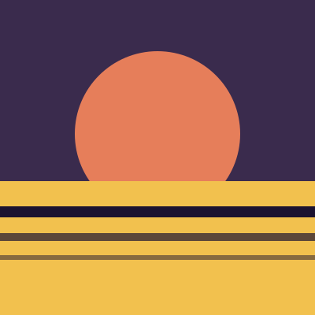

19:16100%
TuttoPlaylistAlbumArtisti
111 elementiAggiunti ↓
Preferiti1
Tutti i brani87
Cronologia
Podcast0
Radio0
Generi
Etichette0
Da revisionare31

Sale e VentoLena Marchetti
19:16100%
TuttoPlaylistAlbum



Corsa del mattino
Playlist di 12 brani


Cena con amici
Playlist di 31 brani


Viaggio in treno
Playlist di 48 brani
19:16100%
Corsa del mattino
12 brani
Cena con amici
31 brani
Viaggio in treno
48 brani
Nuova playlist
319:16100%
Nessun testo trovato per questo brano
4lyrics_screen.dart:38), senza icona né azione (F-18).19:16100%
Artisti uniti
Maré
2 profili
Profili
Maré (YouTube Music)
Filtri attivi
merged_artists_screen.dart:52 ecc.).19:16100%
Aggiunti da poco
TuttiPiù ascoltati
Nuove uscite 3
Tutti